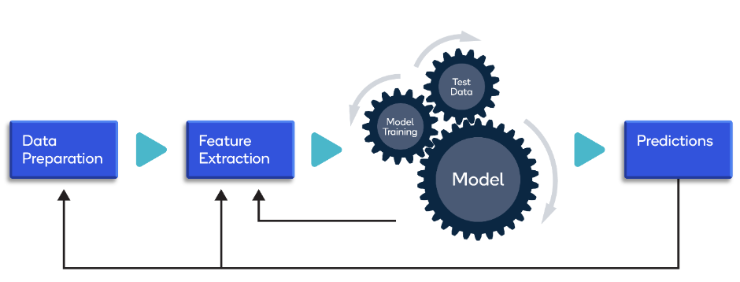
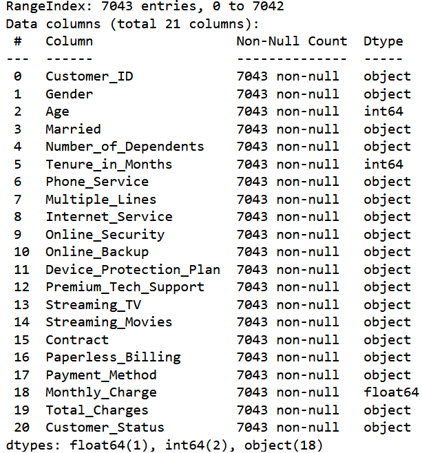
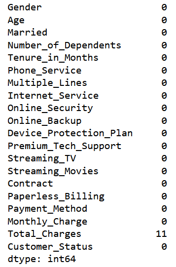
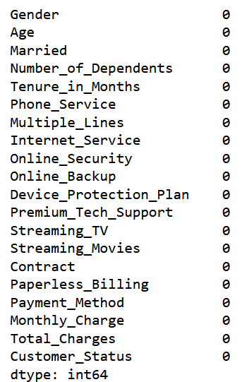

Telecom Customer Churn Prediction
Data Processing Approach
We have performed data preprocessing, Missing Value Analysis, Feature Engineering, identified most valuable customers, tagged churners, and performed required EDA. We have mentioned few inferences observed during EDA.

Data set with all columns and Datatypes
Before removing the null values in dataset
After removing the null values in dataset
Analysis of data columns to identify Explantory and Response variables
X is the independent variables or also called the Explantory Variable -the variables
we are using to make predictions
The variables we identified that describe the product/service and customer behaviour:
- Tenure in Months - number of months the customer has stayed with the company
- PhoneService - whether the customer has a phone service or not (Yes, No)
- MultipleLines - whether the customer has multiple lines or not (Yes, No, No phone service)
- InternetService - customer’s internet service provider (DSL, Fiber optic, No)
- OnlineBackup - whether the customer has online backup or not (Yes, No, No internet service)
- DeviceProtection - whether the customer has device protection or not (Yes, No, No internet service)
- TechSupport - whether the customer has tech support or not (Yes, No, No internet service)
- StreamingTV - whether the customer has streaming TV or not (Yes, No, No internet service)
- StreamingMovies - whether the customer has streaming movies or no(Yes, No, No internet service)
- PaperlessBilling - bills issued in paperless form
- PaymentMethod - payment method used by customer (Electronic check, Mailed check, Credit card (automatic), Bank transfer (automatic))
- MonthlyCharges - amount of charge for service on monthly bases
- TotalCharges - cumulative charges for service during subscription (tenure) period
- Contract - type of contract according to duration (Month-to-month, One year, Two year)

y is the dependent variable or also described as Response variable/Outcome Variable - variable we are trying to predict or estimate.
In our project we are looking into a Binary outcome of whether the customer will Churn or not.
- Customer Status– output value, predict variable
- Customer Category- whether the customer is satisfied or not
- Customer Reason- reason for churn